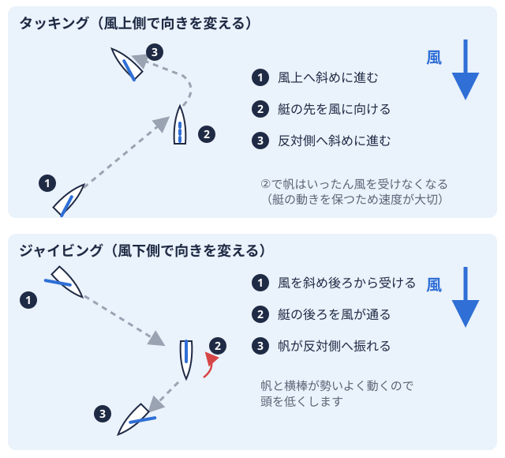

セーリング技術 2026-11-17
ヨットが転覆（沈）したときの起こし方｜新入部員が知っておきたい基本の手順
大学ヨット部に入ると、早い時期に「沈（ちん）」と呼ばれる転覆を経験する場合があります。強い風にあおられたり、タッキング風が吹いてくる方向へ進むとき、艇の先を風に向けて回し、帆を張る側を左右反対にする方向転換。  を持つ小型艇）が転覆したときの基本的な考え方と、起こし方の流れを整理します。対象は、470級全長4.7mの2人乗り競技用ヨット。大きな追い風用の帆とワイヤーを使う。
を持つ小型艇）が転覆したときの基本的な考え方と、起こし方の流れを整理します。対象は、470級全長4.7mの2人乗り競技用ヨット。大きな追い風用の帆とワイヤーを使う。 やスナイプ級2人乗りの競技用ヨット。追い風用の大きな帆を持たず、ワイヤーも使わない。のような艇に乗り始めたばかりの部員や、入部を検討している人です。
やスナイプ級2人乗りの競技用ヨット。追い風用の大きな帆を持たず、ワイヤーも使わない。のような艇に乗り始めたばかりの部員や、入部を検討している人です。
なお、実際の手順は艇種・艇の浮力・風や波の状況・部の安全規程によって変わります。ここで紹介する内容は一般的な入門解説の範囲であり、練習の場では必ず先輩・コーチ・レスキュー艇の指示を優先してください。
「沈」とは何か｜まず言葉をそろえる
ヤマハ発動機のセーリング入門ページには、冒頭で「沈の対処、方向転換の方法を覚えましょう」と書かれています。ヨット乗りの間では、転覆して艇が横倒しになることを「沈」と呼ぶことがあります。英語では「カプサイズ（capsize）」です。
英語版Wikipediaの「Capsize」の項目では、ディンギーが約90度まで倒れる状態を「capsize」、完全に裏返った状態を「turtling（タートリング）」と区別して説明しています。同じ項目には、小型のディンギーは通常の使用でも転覆することがあり、多くの場合は乗員が自力で復帰できるとも書かれています。つまり、小型艇では「転覆は起こりうるもので、起こし方を知っておくことが前提になる」という考え方が一般的だと読み取れます。
転覆を防ぐ基本は、傾きの管理です。傾きの仕組みと抑え方はヨットのヒール角度のコントロール方法、方向転換でバランスを崩さないコツはタッキング・ジャイビングのコツで扱っています。この記事は、それでも転覆したときの「その後」に絞った内容です。
転覆したら最初にすること
ヤマハ発動機の「もしもの時に」のページは、転覆時の心構えとして次の点を挙げています（原文を要約）。
- 沈しても、艇から離れない
- 持ち物や装備品が流されても、泳いで追いかけない
- ライフジャケットは、海に出るときは必ず着ける。沈しても艇から離れず、まず起こして再出航を試み、難しければ艇につかまって救助を待つ
- 岸が近く見えても、泳ぎ出さない
ここで大切なのは、「起こせるかどうか」より前に「艇のそばにいること」が優先されている点です。艇につかまっていれば、浮力のある艇体に体を預けられます。同ページが「岸が近く見えても泳ぎ出さない」と注意しているのは、泳ぎ出すことで体力を消耗する場合があるためと考えられます。ライフジャケットの法的な位置づけや、泳ぎが得意でない人の不安については、大学ヨット部は泳げなくても大丈夫？で整理しています。
また、同ページには、水中で艇につかまれない状況について、一人なら体を丸めて浮き、二人ならしがみついて体温の低下を防ぐという趣旨の説明もあります。服装の面では、ヤマハ発動機の「乗船時の服装」のページが、濡れたうえに風にさらされると体温が奪われ、水に落ちた後は予想以上に体力を消耗すると注意しています。季節や海の状況に合わせた服装を選ぶことが、沈への備えの一部になります。
起こし方の基本の流れ｜ヤマハ発動機の6ステップ
ヤマハ発動機の「沈のおこし方」は、起こし方と再出航までを6つの手順で説明しています。要点を言い換えると、次のとおりです。
| 順番 | 内容 | 補足 |
|---|---|---|
| 1 | センターボードにつかまり、ガンネル（舷縁）に足をかけて体重をかける | 最初は水の抵抗でゆっくり起き、起き始めると勢いがつくため、体重のかけ方を加減する |
| 2 | 背中から風を受ける位置で起こす | 風を正面から受けて起こすと、艇が自分の方へ倒れてくるおそれがある |
| 3 | 艇が起きたら、センターボードに足をかけてコックピットに乗り込む | 慣れないうちは完全に起こしてから、風上自分の艇から見て、風が吹いてくる側。風上へ進むにはジグザグに走る必要がある。 側か船尾から上がる。センターボードが十分に出ているか、シート帆を引いたり緩めたりして、帆の開き具合を調整するためのロープ全般。が体や艤装艇にマストや帆、舵などを取り付け、すぐに走れる状態に整えること。品に引っかかっていないかも確認する 側か船尾から上がる。センターボードが十分に出ているか、シート帆を引いたり緩めたりして、帆の開き具合を調整するためのロープ全般。が体や艤装艇にマストや帆、舵などを取り付け、すぐに走れる状態に整えること。品に引っかかっていないかも確認する |
| 4 | フットベルトにつかまり、一気に艇に上がる | 乗り込む動作は一気に行う、という趣旨の説明 |
| 5 | セイル風の力を受けて艇を進ませる布製の帆。艇には大きさの違う帆を組み合わせて使う。をシバー（はためかせて失速）させ、艇を止める | 乗り込んだ直後に艇が走り出さないようにする |
| 6 | 損傷や流された物がないか確認し、帆走できるなら再出航する | セルフベーラー（コックピットの水を自動で排出する仕組み）があれば作動させて水を出す |
用語を補足します。「ガンネル」は艇の縁、「フットベルト」はハイクアウト艇が傾きすぎないよう、体を艇の外側へ乗り出して重しにすること。で足をかけるベルト、「シバー」はセイルを風にはためかせて推進力を失わせることです。手順はあくまで入門者向けの流れで、艇種ごとの細かい違いまでは書かれていません。
手順のなかで特に気をつけたい点
この6ステップから読み取れる注意点を、3つに絞って整理します。
- 起こす向きは、風との位置関係で決まる: ヤマハ発動機の解説は、背中から風を受ける位置で起こすよう勧めています。風が正面から吹き付けると、起き上がった艇が自分のほうへ倒れかかってくる場合があるためです。
- 起き始めてからは勢いがつく: 最初は水の抵抗で重く感じても、起き始めると急に動きが軽くなる場合があります。体重をかけすぎず、艇の動きを見ながら力を加減する必要があります。
- 乗り込んだあとにすぐ止める: 起き上がった直後の艇は、セイルに風を受けて動き出すことがあります。乗り込んだらセイルをシバーさせて艇を止め、体勢を整えてから次の操作に移ります。
補足｜別の資料に見られる違い
同じ「起こし方」でも、資料によって力点が異なります。入門者は、複数の見方があることを知っておくと、先輩やコーチの指示も理解しやすくなります。
英国のセーリング関連ページ「Righting a Capsized Sailing Dinghy」（Go Sail）は、起こす前にセンターボードが十分に下りているかを確認するよう勧めています。理由は、板がしっかり出ているほうがてこの効果が大きくなるためです。また、艇が軽ければ腕で板を保持して起こせるが、重い艇では板の上に立つ必要がある場合があること、立つ場合はセンターボードが折れる危険を減らすため、できるだけ艇体に近いところに立つことも注意点として挙げています。起き上がるときは、艇が自分の上に倒れてこないよう離れる、またはそのまま乗り込む動き方が紹介されています。
英語版Wikipediaの「Capsize」は、多くの小型単胴艇は、センターボードやダガーボードに立つ、または引っ張ることでマスト帆を取り付けるために、艇の甲板から垂直に立てた、細長い支柱（棒）。が水面から持ち上がり、起こせると説明しています。同じ項目には、艇首（バウ）を風上に向けると、風がセイルの下に入って起こすのを助けるという趣旨の説明もあります。向きを誤ると、艇が反対側に倒れ、乗員がその下敷きになる場合があるとも書かれています。
ここで気づくのは、ヤマハ発動機の説明（背中から風を受ける位置）と、Wikipediaの説明（艇首を風上へ向ける）は、風と艇の向きの関係を別の角度から述べているという点です。どちらの記述も一般的な入門解説であり、風向、艇種、艇の浮力、波の状況によって適切な向きや立ち位置は変わる可能性があります。自分の部の艇では、先輩やコーチに「この艇は、この風でどの向きから起こすか」を実際に見せてもらうのが確実です。
カプサイズ訓練という考え方
英語版Wikipediaの「Capsize」は、一定の経験を積んだセーラーに対し、監督のもとで一度は意図的に転覆し、艇がどう浮き、転覆がどう進むかを知っておくことを勧めています。その後、艇を起こし、水を出し、セイルを整え直すところまで含めて練習するとされています。
日本の大学ヨット部でも、新入部員が早い時期に転覆した艇を立て直す練習を行う例があります。例えば、当サイトの泳げなくても大丈夫？の記事では、そのような訓練の位置づけを紹介しています。訓練の時期や方法は部によって違うため、入部前の見学や体験乗艇で「カプサイズ訓練はいつ、どのように行うか」を質問しておくと安心です。
起こすときに体へかかる負担
艇を起こす動作は、腕や肩、腰を使います。ヨット部では、メインシートを引き込む動作や転覆後に艇を起こす動作が、肩の痛みと関連して語られることがあります。疲れがたまった状態や、体が冷えた状態で無理に起こそうとすると、怪我につながるおそれがあります。部位別の予防の考え方はヨット部の肩・腰の怪我予防、体づくりの考え方はヨット部の筋トレメニューの考え方で扱っています。
起こす動作には、力だけでなく体重の使い方も関わります。Go Sailのページは、軽い艇なら腕で板を保持して起こせるが、重い艇では板に立つ必要がある場合があると説明しています。つまり、艇の重さによって必要な力は異なります。どの艇でどの程度の力が必要かは、練習の場で先輩に確認してください。
起こせないときの判断
ヤマハ発動機の解説は、起こせない場合の判断についても触れています。再出航を試みても難しければ、艇につかまって救助を待つという流れです。岸が近く見えても泳ぎ出さない、という注意もあわせて示されています。
練習の現場では、レスキュー艇（伴走艇）が同行する体制を取る部があり、マネージャーがレスキューを担当する場合もあります。その位置づけはヨット部のマネージャーの仕事内容に書かれています。助けを求める合図、集合場所、起こしてよい状況・待つ状況の基準は部によって異なるため、入部したらまず確認すべき項目です。
体温や暑さへの備えも欠かせません。ヤマハ発動機は、濡れたうえに風にさらされると体温が奪われると注意しています。暑さ・日差しへの対策はヨット部の熱中症対策と日焼け対策で解説しています。
新入部員が事前にできる準備
起こし方は、実際に艇で練習しないと身につきません。ただし、事前に知っておくと余裕が生まれる点があります。
- 艇の各部の名称を覚える: センターボード、ガンネル、フットベルト、シートなどの言葉が分かると、先輩の指示が通じます
- 服装と持ち物を確認する: 眼鏡や帽子には専用バンドを付ける、長い髪はまとめるなど、ヤマハ発動機の「乗船時の服装」に挙がっている工夫は、沈のときに物を失いにくくなります。持ち物の全体像は大学ヨット部に入る前に何を用意する？で整理しています
- 風と天気を読む: 出艇前に風の強さと変化を把握しておくと、沈のリスクを下げる判断に役立ちます。ヨット部の天気図の読み方や風向き判断のコツが参考になります
- 起こし方を先輩に実演してもらう: 文章で読むだけでなく、自分の部の艇でどの向きから起こすかを、陸上や浅場で見せてもらうと理解が進みます
大会や観戦の視点で見る沈
大会のレースでも、強風の日には沈が起こりえます。英語版Wikipediaの「Capsize」は、競技では、マストが水面に触れた時点で転覆と数える場合があると説明しています。競技規則での扱いは大会や規則の版によって異なるため、観戦や出場の前に、大会の公示大会の主催者が事前に出す、参加資格や日程などを知らせる文書。で確認してください。レース規則の基本はヨットレースのルール基礎にまとめています。
自分の水域全国の大学ヨット部を地域ごとに分けた区分。北海道から九州まで全国に9つある。の大会予定は、ヨットマニアの大会カレンダーから、結果は成績PDFリンク一覧から確認できます。水域ごとの連盟や公式サイトへの案内は水域一覧にあります。大学ごとの練習拠点や使用艇種を知りたい場合は、関東と近畿北陸のみ関東の水域ページや近畿北陸の水域ページから加盟大学のディレクトリをたどれます。たとえば千葉大学のページのように、大学ごとの情報が載っています。ただし、他の水域の大学ディレクトリは準備中で、大会成績PDFのみの掲載です。
まとめ
- 沈は、小型のディンギーでは起こりうることで、多くの場合は乗員が自力で起こせるとされている
- 沈したら、艇から離れず、泳ぎ出さず、持ち物を追いかけない
- 起こし方の基本は、センターボードにつかまって体重をかけ、背中から風を受ける位置で起こし、乗り込んだらセイルをシバーさせて艇を止める流れ
- 向き（風との関係）や立ち位置の考え方は資料によって表現が異なるため、自分の艇では先輩・コーチに実際に見せてもらう
- 起こせない場合は、艇につかまって救助を待つ
最初は、艇が傾いて倒れること自体に驚くかもしれません。ただ、手順を知り、練習の場で何度か体験しておくと、落ち着いて対処しやすくなります。まずは見学や体験乗艇で、その部がどのように安全面の練習を組んでいるかを聞いてみてください。
出典
PR
この部活・競技を応援したい方へ
体育会学生を支援するプラットフォーム「ツナカレ」で、応援できる部活を探せます。
PR
取材してほしい部活を募集中
あなたの部活・大会を取材してほしい方はこちらからご依頼ください。
部活を続けながら、就活も進めたい方へ
体育会の学生のための就活相談です。無料で、メールアドレス・学年・所属の入力だけで始められます。